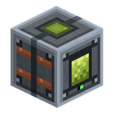

Бочка бродіння
alaindustrial:fermenter
Зведення
Бочка бродіння — LV-машина, яка переробляє органічне сміття на паливо. На вхід ідуть органіка, вода та EU/FE; на виході — біопаливо у власний бак і біомаса у слот результату. Це перше паливо моду, яке вирощують, а не викачують із землі: грядка й курник заміняють нафтове озеро.
З двох виходів гарантований лише один. Біопаливо вариться завжди, біомаса — за шансом рецепта. Так і задумано: рідина — те, що бродіння дає неминуче, а твердий залишок — те, що інколи переживає процес.
Міні-приклад: дрон-садівник звозить урожай у скриню, лійка сипле його в бочку, відро води стоїть у слоті заливання, кабель від сонячної панелі йде в бік. Через п'ятнадцять секунд у правому баку перші мілілітри біопалива.
Енергія
Бочка лише споживає EU/FE. Енергію приймають усі грані, крім лицьової (та, куди дивиться модель) — звичайний контракт машини моду.
| Що | Значення |
|---|---|
| Роль | споживач із буфером |
| Внутрішній буфер | 800 EU/FE |
| Макс. вхід | 32 EU/FE/такт (LV) |
| Макс. вихід | н/з (не віддає) |
| Споживання | 2 EU/FE/такт |
| Ціна операції | 600 EU/FE |
Панель поліпшень у бочки є: прискорювачі працюють на ній за загальним правилом — тривалість униз, EU/FE/такт угору, енергія на операцію зростає.
Рідина
Два баки по 10 відер — вхід і вихід, і сплутати їх не можна.
| Бак | Обсяг | Що приймає | Доступ ззовні |
|---|---|---|---|
| Вода (вхід) | 10 000 mB | лише вода-джерело (minecraft:water) | лише заливання, з будь-якої грані |
| Біопаливо (вихід) | 10 000 mB | наповнює лише сама машина | лише забір, тільки з нижньої грані |
Асиметрія граней читається без тултипів і робить помилку неможливою: одна нитка труб не зможе випадково налити воду у вихідний бак. Пробний запит без грані (Jade, WTHIT, чужа труба) відповідає баком води — це «особиста» рідина машини.
Вода — не частина рецепта, а фіксована ціна машини: 100 mB за партію , однаково для всіх трьох тирів сировини. Вода, що потрапила в бак, назад не викачується — це сировина, а не сховище.
Обробка
Тип рецепта —. Одна партія: 300 тиків (15 с) і 600 EU/FE, незалежно від того, чим машину годують. Змінюється лише те, скільки сировини з'їдено і скільки отримано.
| Тир органіки | Теґ | З'їдає | Біопаливо | Шанс біомаси |
|---|---|---|---|---|
| Дешевий | 4 шт | 20 mB | 6 % | |
| Звичайний | 2 шт | 60 mB | 20 % | |
| Цінний | 1 шт | 150 mB | 50 % |
Дешевий — садове сміття: насіння, трава й папороть, листя, саджанці, квіти, ліани й мох, очерет, бамбук, кактус, гриби, гнила плоть, отруйна картопля, павуче око. Звичайний — рядовий урожай і сировина з подвір'я: пшениця, морква, картопля, буряк, гарбуз, скибка кавуна, яблуко, ягоди, какао, пекельний наріст, хліб, яйця, сире м'ясо й риба, шкіра, пір'я. Цінний — те, що вже перероблене або спресоване: золота морква, золоте яблуко, варені м'ясо й риба, печена картопля, торт, гарбузовий пиріг, печиво, супи, мед і стільники, стіг сіна, блок сушених водоростей, цукор.
Ціна операції одна на всіх — це інваріант моду: в одного виду рецептів рівно одна ціна. Гравець керує не швидкістю, а тим, що кладе в слот: чотири жмути трави дають 20 mB і одну біомасу на шістнадцять партій, одна золота морква — 150 mB і біомасу через раз.
Тир читається за теґом предмета в слоті, а не з рецепта. Причина — в устрої рецептів моду: жодна родина не приймає предмети і рідину одночасно і не видає обидва види виходу разом. Тому рідинна сторона операції належить машині (конфіг), а предметна — рецепту (JSON). Тим самим способом уже влаштована електрованна: її вода — теж ціна машини.
Що зупиняє бочку. Уся ціна має бути на руках кожен такт, а не лише на старті: вийняли сировину чи відкачали воду посеред партії — робота стає, а не дораховується «в борг». При зникненні енергії, порожньому баку води, повному баку біопалива або зайнятому слоті виходу поступ завмирає і триває з того самого місця; якщо ж у слоті опинився предмет, під який немає рецепта, поступ скидається в нуль. Ніщо при цьому не знищується.
Інвентар
Шість слотів машини плюс чотири слоти панелі поліпшень.
| Слот | Приймає | К-сть |
|---|---|---|
| Органіка (0) | усе, що підпадає під | до стосу |
| Заливання води (1) | повне відро/капсула з водою | 1 |
| Повернення тари (2) | спорожніла тара — заповнює лише машина | до стосу |
| Злив біопалива (3) | порожнє відро/капсула | 1 |
| Видача тари (4) | заповнена тара — заповнює лише машина | до стосу |
| Біомаса (5) | результат — кладе лише машина | до стосу |
Обмін тарою йде безкоштовно й поза рецептом: відро води зі слота 1 їде в бак і падає порожнім у слот 2, порожня тара зі слота 3 наповнюється біопаливом і йде в слот 4. Лійки й труби можуть класти в слоти 0, 1 і 3 та забирати з 2, 4 і 5; у вихідні слоти ззовні не покласти нічого.
Інтерфейс
Екран із двома шкалами рідини — по одній на кожен бак: ліворуч вода, праворуч біопаливо, між ними стрілка поступу, біля правого краю — смуга енергії. Обидві шкали малюються текстурою самої рідини, тому вода в лівому баку виглядає водою, а біопаливо в правому — біопаливом. Під шкалами — рядок статусу, який називає причину простою:
| Статус | Коли |
|---|---|
| Готово / вариться | іде партія або все для неї є |
| Немає органіки | слот сировини порожній чи в ньому менше, ніж просить партія |
| Немає води | у баку менше ніж 100 mB |
| Це не зброджується | предмет у слоті є, але жоден рецепт бродіння його не приймає |
| Бак біопалива повний | наступна партія не влізе |
| Вихід заблоковано | слот біомаси не прийме результат |
Властивості блока
Повний куб із лицьовою стороною: машина повертається до гравця при встановленні й світиться під час партії (окрема «увімкнена» модель).
| Що | Значення |
|---|---|
| Форма | повний куб 16³ (окклюдер) |
| Міцність | 3.0 |
| Вибухостійкість | 6.0 |
| Матеріал звуку | метал |
| Інструмент | кайло |
| Зберігає вміст при зламі | ні — баки, інвентар і поступ живуть у блоці, а не в предметі |
Звук
Мовчить. Гудіння машин у моді авторське, у кожної своє; бочку відвантажено без власної петлі, а не з чужим голосом. Додати її пізніше — це звуковий файл плюс під'єднання інтерфейсу, без правок самого блока.
Рецепти
Верхній ряд — дві залізні пластини з відром між ними; середній — дві мідні пластини навколо корпуса машини; нижній — ще дві залізні пластини, а між ними електронна схема.
Відро в центрі верхнього ряду — та сама «бочка», заради якої машину названо; схема внизу — обов'язковий вхід у LV-техніку.
Рецепти бродіння — (по одному на тир, усі три з energy: 600).
Прогресія
Тир: LV. Ставиться одразу після перших машин: корпус, схема й пластини — усе вже є на цей момент. Початок органічного ланцюга: бочка → біопаливо → перегінна колона → поживний розчин → обприскувач. Ферма годує бочку, бочка через дві перегонки повертає фермі прискорення — контур замикається сам на себе. Добре стоїть поруч зі станцією дрона-садівника: та звозить урожай, ця його зброджує.
Пов'язане
Біопаливо — рідкий вихід, завжди. Біомаса — твердий вихід, за шансом. Перегінна колона — другий крекінг: біопаливо → поживний розчин. Обприскувач — кінець ланцюга, споживач розчину. Станція дрона-садівника — постачальник органіки. Насос — подає воду в бочку з найближчої водойми.
Крафт
Крафт на верстаку
▶
Бочка бродіння